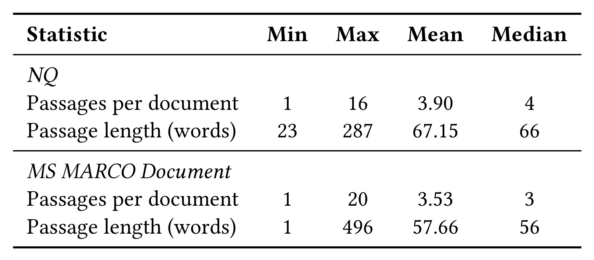
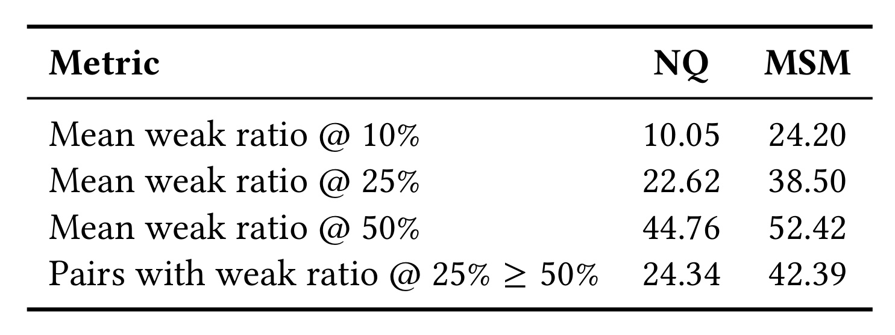
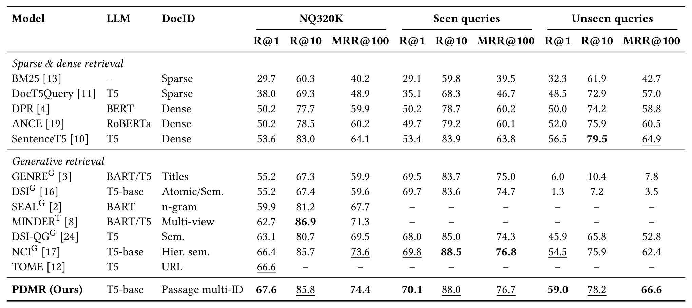
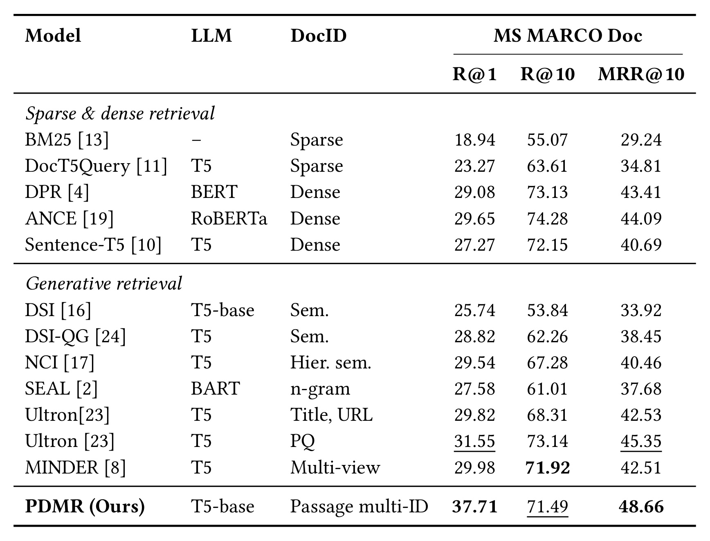
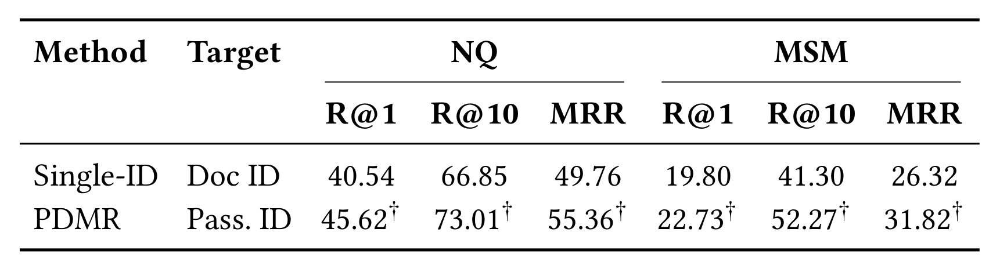
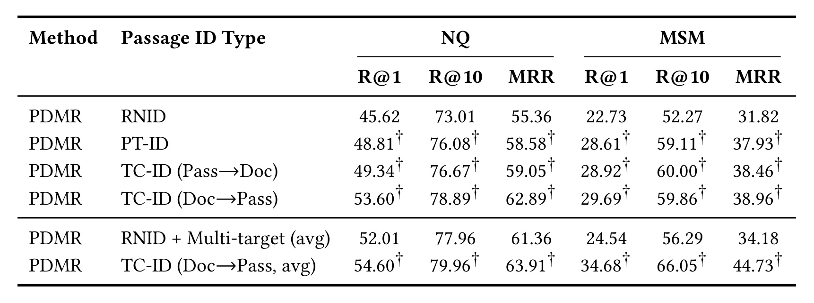
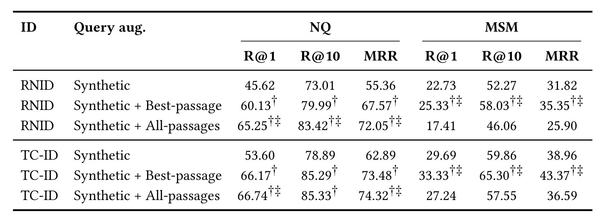
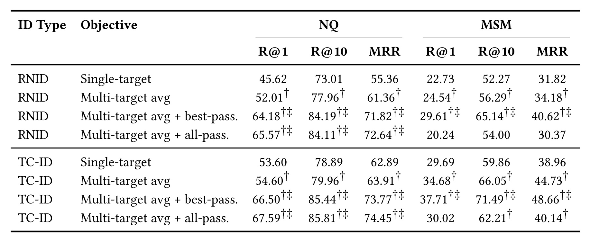
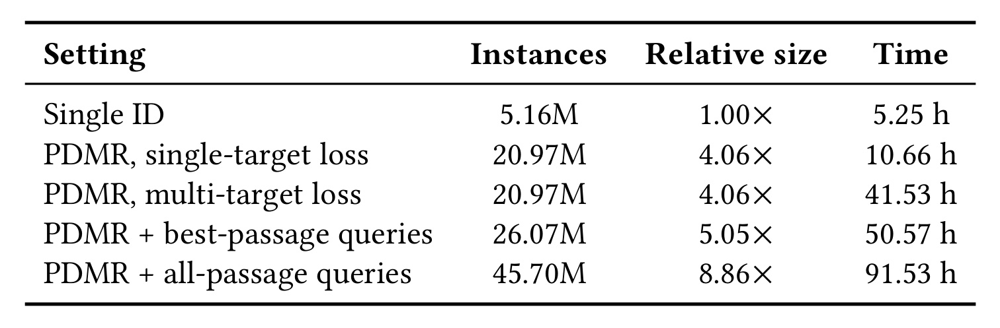
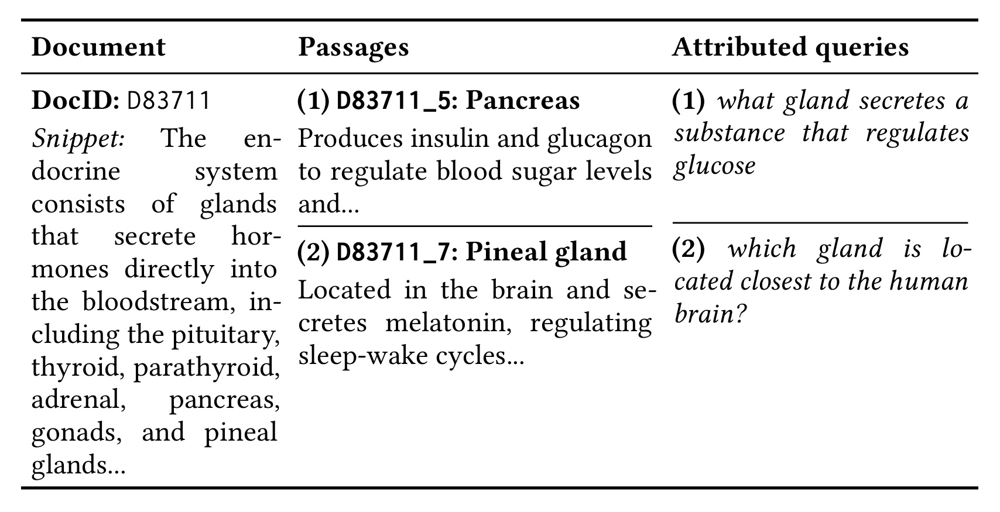

PDMR：让一篇文档拥有多个段落语义入口
论文：PDMR: Passage-Driven Multi-ID Document Retrieval
作者：Smail Oussaidene、Mohand Boughanem
机构：Institut de Recherche en Informatique de Toulouse（IRIT，图卢兹信息研究所）
公开日期：2026 年 9 月 8 日，arXiv v1；记录日期：2026 年 9 月 11 日
原文入口：arXiv:2609.08762
代码状态：未核验到本文独立公开代码或项目入口。论文引用的 TSGen 仓库提供数据设置与基线背景，不能当作 PDMR 的代码发布。
PDMR 研究生成式文档检索中的一个表示问题：模型要直接生成文档地址，而一篇文档可能包含许多能够独立回答查询的段落。如果所有意图必须汇聚到唯一地址，一些局部内容就难以形成可靠的生成路径。作者把文档拆成多个语义单元，为它们分别构造标识，再把生成出的段落标识映射回原文档，最终仍用文档级检索指标评价。
核心问题：单一文档标识把多面内容压缩成一条生成目标，使不同查询意图竞争同一访问路径；如何为文档内部不同语义段落建立多个可学习入口，并在只有文档级相关性标签时处理一个查询对应多个有效标识的监督歧义？
1. 背景和问题
1.1 从检索表示到生成路径
传统稀疏检索把查询词与文档词项匹配，稠密检索把双方编码后计算相似度。生成式检索改变了输出接口：输入查询，输出一串能够定位文档的标识符。标识可以是随机数字、由聚类或量化得到的离散码，也可以是标题、网址、片段等自然语言。模型不只是判断一对查询和文档是否匹配，还必须按顺序选择下一个标识词元，最终走到一个合法地址。因此，文档标识的设计同时决定表示容量、监督目标和解码搜索空间，不能仅当成数据库主键的命名选择。
单一标识对内容集中、主题清晰的文档未必困难，例如一个实体页面的标题可能已经覆盖大量相关问题。但是长文档的内部结构会改变这一假设：同一文章可能同时介绍某对象的定义、组成、作用和历史，不同查询只关注其中一小部分。若标识主要概括整篇文章，局部事实与地址之间就可能缺乏显式联系。生成模型需要从这些差异很大的查询中学到同一个目标序列，训练数据不足的局部意图尤其容易被文档主主题掩盖。这里讨论的是访问路径是否足够表达局部语义，并不意味着模型必然没有读过或记住过相关事实。
自回归解码让这种压缩产生额外后果。标识前缀一旦在有限束搜索中被剪掉，后面的局部证据就没有机会把正确路径重新补回来。给整篇文档添加一个更精致的标题可能改善语义，但仍只提供同一条入口。PDMR 的问题定义因而落在文档与标识的映射关系上：能否让某个局部意图直接触发对应段落的地址，而无需先把它完全翻译成整篇文档的全局描述？这种改变既有表示意义，也会增加合法候选空间，需要同时考虑搜索和训练的代价。
1.2 多视角描述与多语义单元
相关工作已经尝试为一个检索单元设计多个标识。MINDER 使用标题、子串和伪查询等不同视角，Few-Shot GR 也允许同一文档对应多条自由文本标识。作者并未把“一个对象多个地址”本身作为全新发现，而是强调地址到底代表什么：多个描述可以都在解释同一个整体；多个段落标识则明确绑定文档内部不同的内容单元。这一区分决定训练查询能否与原文某个局部证据建立对应关系，也决定标识生成后能否追溯到文档中的特定语义位置。
例如一篇介绍内分泌系统的网页，同时包含胰腺分泌胰岛素与松果体分泌褪黑素的段落。问“哪个腺体调节葡萄糖”和问“哪个腺体靠近大脑”都可能命中同一网页，但需要的词汇和局部证据不同。给网页标题再换一种说法，不一定会显露这两个答案区域；为两个段落分别建立地址，就能把不同查询连接到不同语义入口。原文附录用这一类案例解释动机，案例自身没有给出检索前后预测排名，因此它说明问题的合理性，不能代替模型效果证据。
细粒度对齐也不是生成式检索独有的需求。段落检索把长文切分后寻找局部答案，ColBERT 一类晚交互方法保留词元级表示，都是为了避免将丰富内容过早压成单个全局向量。PDMR 把这一原则放到标识设计中：训练和解码使用段落入口，系统返回和评价仍是文档。理解这个边界很重要，因为它没有把任务改成问答，也没有通过生成答案来验证事实是否正确。即便入口指向某段落，最终命中的相关对象依然是父文档。
1.3 粒度变化带来的监督歧义
一旦每个文档拥有多个段落标识，文档级标签就不够直接了。数据通常只告诉模型查询与哪篇文档相关，并不标注究竟哪一个段落最适合成为生成目标。把所有段落都视为正例，可以增加覆盖，却可能把菜单、背景介绍或无关主题也当成需要学习的地址；只选一个段落，监督更集中，但会丢失其他有效入口。作者把这一矛盾作为方法的第二个核心，而不是默认切段以后就自然拥有高质量训练样本。
另一个需要区分的概念是“合法文档入口”和“与查询直接相关的段落”。只要某段落属于相关文档，生成它的标识再回映射，就可能在文档级评估中得到正确结果；但这个段落的文字不一定能回答当前问题。这会导致目标函数与局部证据强度之间存在张力。论文用主段落较高权重、其余段落共享剩余权重的方式保留区分，也比较把真实查询分配给最佳段落和全部段落的效果。两个数据集的最佳策略不同，正好说明该张力不能用统一的“正例越多越好”消除。
因此，本篇最值得检验的主张包含三个层次：先看段落化是否在相同损失下带来收益，再看标识语义、查询对齐与多目标学习是否提供额外贡献，最后检查更多地址与更多训练计算是否换来了足够效果。主表可以回答最终配置的检索表现，消融才能帮助理解来源。原文没有宣称已经解决所有生成式检索困难：标识歧义、早期路径剪枝和固定地址设计仍然存在，作者也明确承认整体结果没有达到 NQ320K 的全领域最先进水平。这使本文更适合作为对检索目标粒度的受控研究来阅读。
从检索任务的终点再看一次这项设计，可以避免另一种误读：输出段落标识并没有要求用户只看到一个被切碎的片段。父文档映射保留完整内容，局部地址只是内部检索接口。好处是不同查询可以通过不同入口抵达同一个对象，评估也能沿用已有文档标签；代价是同一文档多个候选的分数如何合并、是否挤占其他文档的搜索机会，都必须额外定义。作者最终选择最大概率聚合，所以本文并没有利用多个段落同时高分来累积相关性证据。对比其他多向量或多视角系统时，应同时比较内部表示粒度和最终聚合规则，不能只根据地址数量判断它们等价。
2. 方法
2.1 文档解构与语义入口
方法先保持生成式检索的基本概率模型。给定查询，模型依次预测标识中的词元，完整标识的概率是每一步条件概率的乘积：
符号解释：$q$ 是查询，$y$ 是标识序列，$y_t$ 是第 $t$ 个词元，$y_{\lt t}$ 是已生成的前缀，$\theta$ 表示检索模型参数。这个分解强调标识顺序会影响搜索：文档标题先出现，模型先走全局主题路径；段落标题先出现，模型先选择局部语义。即便两种标识包含相同文字，前缀不同也会影响束搜索保留下来的候选。
PDMR 将文档到单地址的映射改成文档到地址集合。每个地址对应一个经过筛选的段落，生成任意一个地址都可以映射回文档：
符号解释：$d$ 是文档，$K$ 是该文档选出的段落数量，$y^{(i)}$ 是第 $i$ 段的标识；$d^*(q)$ 是查询的一个相关文档，$\mathcal{Y}(q)$ 是论文形式化中允许的目标集合。这里把相关文档的所有段落地址都视为能够正确返回文档的目标，是文档级任务定义；它不等于宣布所有段落在语义上同样相关。训练阶段仍需指定主段落，避免不同地址在监督中完全失去差别。
获得段落集合使用两轮大模型处理。第一轮把文档分解成短、可独立理解的语义单元，每个单元输出标题和正文，目标是尽可能覆盖潜在信息，允许存在重叠或较次要内容。第二轮把候选集合再交给模型，去重并选择信息量较高、彼此差异明显的段落，减少冗余入口。实现使用 Qwen3-8B 完成切分。它承担离线数据构造工作，在线生成标识的检索骨干是 T5 Base；不能因为数据处理用了八十亿参数模型，就把最终召回器描述为 Qwen 在线检索系统。
2.2 标识构造与查询对齐
论文比较三类地址。RNID 为每个段落分配与语义无关的随机数字串，用来观察细粒度入口本身的作用。PT-ID 直接使用切段阶段生成的段落标题，让查询词与局部语义更容易对齐，但相似段落可能在不同文档中出现，缺少全局背景会增加消歧困难。TC-ID 把文档标题和段落标题拼接，比较“文档标题 / 段落标题”与“段落标题 / 文档标题”两种顺序。文档在前能为同一文档的不同段落提供共享前缀，段落在前则更早暴露局部主题。这是利用已有标题构建固定目标，不是联合学习离散码本。
随后建立查询与地址的训练对。第一类是合成查询：DocT5Query 从具体段落生成查询，再用交叉编码器筛选质量。由于查询由已知段落产生，可以直接把源段落标成主段落，也使没有真实查询标签的段落得到学习机会。第二类是真实训练查询：原始标签只有父文档，因此作者比较两种分配方式。全部段落分配将查询关联到相关文档的每个段落；最佳段落分配使用 BM25 在该文档内部打分，只保留最匹配的段落。这里 BM25 是推断监督对齐的工具，并不意味着最终系统在线先跑 BM25 再生成标识。
两种数据来源承担不同作用。合成查询保证地址库存获得覆盖，但其表达分布受查询生成器限制；真实查询提供自然信息需求，却没有细粒度人工标注。把两者混合能够同时利用覆盖与真实分布，但其比例不能忽视：实现中每个真实训练查询针对每个被选地址复制二十次。这会显著提高真实查询在训练流中的权重，同时增加实例量；全部段落方案还会随文档段落数进一步膨胀。原文没有把二十倍复制的取值扫描完整报告出来，因此复现不能把它当作无关紧要的数据加载细节。
在概念上，查询分配和多目标损失是两个步骤。前者决定训练样本怎样构造以及主段落如何指定，后者决定一次学习时是否同时评价该文档的其他合法地址。不能把最佳段落分配理解成模型从此只承认一个地址，也不能把全部段落分配与多目标目标函数视为同一个开关。论文分别对二者消融，是为了避免把样本覆盖的变化和损失结构的变化混为一谈；真正复现时也应保留这两层配置以及每条训练样本的父文档映射。
2.3 多目标损失与文档排序
单目标基线对一个查询只优化一个目标标识的负对数似然。多目标版本为同文档的一组地址分别计算负对数似然，然后按权重求平均：
符号解释：$\ell_i$ 是查询生成第 $i$ 个地址的损失，$w_i$ 是该地址的监督权重，$K$ 随文档所含段落变化。论文实现给最直接匹配的主段落权重 $0.6$，剩余 $0.4$ 平均分到其他地址。对 $K\gt1$ 可写成主段落 $w_{i^*}=0.6$、其他段落 $w_i=0.4/(K-1)$。原文没有展开只有一个段落时的边界实现；复现应把唯一目标规范化为总权重一，并记录该实现选择，不能直接套用分母为零的表达式。
这一目标是加权负对数似然之和，不是先对多个地址概率求和再取负对数。两者的训练倾向有实质差别：边缘似然可能只需一个地址概率足够高就得到较低损失；加权平均会持续关注每个有正权重的目标，避免模型只掌握唯一容易生成的入口。与此同时，如果辅助段落与查询弱相关，损失也会要求模型给这些地址留出概率，监督噪声并没有自动消失。主段落较高权重只能缓解问题，不能从定义上证明其他目标都提供正向梯度信息。
推理使用一个统一段落标识库存上的受约束束搜索，只生成合法地址，不为每一种标识视角分别运行解码。得到候选后按父文档去重，将同文档各入口的最大生成概率作为文档分数：
符号解释：$Z_d$ 为文档的所有段落地址，$p_\theta(y\mid q)$ 是该完整标识序列的联合生成概率，最大值强调最强入口。它不是对同文档所有入口求和，因此不能把本文结果解释成“多个弱段落证据累计后抬高文档得分”。实际束搜索只会产生部分候选，早期剪枝仍然可能令某个高潜力入口不可达；同文档多个入口也可能占用候选宽度。作者未报告推理时延和束宽扩展曲线，所以“一次解码”只说明运行方式，不能推导出相较其他检索系统更低的线上成本。
3. 实验结果
3.1 数据与评估边界
实验采用 T5 Base，训练三个 epoch、batch size 为 256，在 NVIDIA H100 80GB 上运行；优化器为 Adafactor，权重衰减 0.01、梯度裁剪范数 1.0、标签平滑 0.05，前 10% 步数线性预热，采用 bfloat16。学习率在 $3\times10^{-4}$ 至 $5\times10^{-4}$ 范围调节，选验证集表现较好的配置。NQ 预处理后有 109,739 篇文档与 7,830 个开发查询，切分后有 428,412 个段落。MS MARCO 使用保留至少一个训练或开发查询关联文档的子集，共 323,569 篇文档和 5,187 个开发查询，产生 1,142,073 个段落。这不是完整 MS MARCO 文档库评估。

Table 1 的行分别描述每篇文档的段落数量和每个段落的词数，列给出最小值、最大值、均值和中位数。NQ 平均每文档 3.90 段，中位数四段，平均段长 67.15 个词；MS MARCO 平均 3.53 段，中位数三段，平均段长 57.66 个词。两个集合都被压成少量短语义单元，而不是把所有滑动窗口都当地址。因此多入口增加了标识数量，但作者仍希望通过筛选控制库存规模，避免许多重复片段竞争解码资源。
分布的尾部也需要读出来：NQ 单篇最多十六段，MS MARCO 最多二十段；后者段长最少一个词、最多 496 词，说明大模型切分并没有严格固定长度。均值相近不代表不同文档拥有相同质量的段落边界，也不能由“每篇三至四段”断言预处理误差很小。这些数字对复现的价值在于可以检查切分提示、去重与过滤是否产生大致相同规模；如果自己得到每篇几十段，目标空间、样本量和多目标计算都会改变。表中没有人工切分质量评估，因而它证明数据形态，尚不能证明所有输出单元都同样完整和准确。

Table 2 先对一个正查询—文档对的内部段落做 BM25 打分，再把低于该文档最佳段落得分某个比例的段落记为弱对齐。前三行用百分之十、百分之二十五和百分之五十这三个相对阈值，比较每对样本的弱段落比例均值；最后一行统计在百分之二十五阈值下、至少一半段落弱对齐的样本占比。它并不是用人工标注宣布这些段落不相关，而是在同一相关文档内部衡量词汇匹配的不均匀性，阈值是相对最佳段落而非一个跨文档固定分数。
在百分之二十五阈值下，NQ 的平均弱段落比例为 22.62%，MS MARCO 为 38.50%；至少一半段落弱对齐的正样本比例分别是 24.34% 与 42.39%。这意味着网页集合中，父文档相关更经常伴随较多局部弱匹配区域。它支持作者关于全部段落监督可能在 MS MARCO 引入更多噪声的解释，也为之后的分配策略消融提供先验依据。但 BM25 会漏掉词汇差异较大的语义匹配，因此这些统计应被视为诊断信号；要直接判定段落真相关性，还需要人工检查或更可靠的局部评价。它不能独立证明性能差异全部由网页结构造成。
3.2 两个基准的主结果
NQ 报告 R@1、R@10 和 MRR@100，MS MARCO 的 MRR 截止到十。R@1 观察首位命中，R@10 观察前十召回，MRR 则根据第一个相关结果的排名给分；这三个指标反映不同侧面。NQ 的 seen/unseen 划分看的是目标文档有没有带标签的训练查询，unseen 不代表文档从未进入索引或从未参与合成查询训练。基线数字主要复用文献结果，作者尽量对齐基准、骨干和评价口径，明确没有把所有方法在同一环境重跑。

Table 3 横向分成完整集、seen 和 unseen 三组，每组均包含三个指标；左侧还列出骨干与标识类型。PDMR 完整集 R@1 为 67.6、R@10 为 85.8、MRR@100 为 74.4。对比 NCI 的 66.4、85.7、73.6，首位命中提升 1.2 个百分点，MRR 提升 0.8 个百分点，前十召回只高 0.1 个百分点。对 DSI-QG 的三项提升为 4.5、5.1 和 4.9 个百分点。后者差距较大，但两类比较仍是报告配置整体的差异，不能单靠主表把全部增益归于段落粒度。
最接近多入口思路的 MINDER 为 62.7、86.9、71.3。PDMR 的首位和倒数排名更高，但前十召回低 1.1 个百分点，说明本文优势主要发生在排序靠前位置，而非全面覆盖更多相关文档。seen 上 PDMR 为 70.1、88.0、76.7，NCI 为 69.8、88.5、76.8，同样不能写成 PDMR 每项均优。unseen 上 PDMR 达到 59.0、78.2、66.6，比 NCI 的 54.5、75.9、62.4 更强，较支持没有目标文档真实训练查询时，段落入口仍能改善检索的解释。
这组结果的意义在于收益没有局限于有标签文档的记忆，但仍属于给定语料内的监督覆盖差异，而不是新增文档零样本索引实验。表中部分模型缺少分组结果，破折号不能当成零分；骨干和辅助训练细节也存在差异。作者在局限章节明确指出 GenRET、NOVO、Few-Shot GR、TSGen 等报告了更强的 NQ 完整集成绩，未把它们都放进这张受控比较主表。因此正确结论是相对所列可比标识基线有竞争力、尤其改善首位表现，不能延伸成刷新 NQ320K 总榜。
分组比较还可观察模型对监督缺口的敏感性：PDMR 从 seen 的首位表现到 unseen 仍有明显下降，多入口并没有抹平标签覆盖差异。它改善的是这一困难条件下相对其他所列生成模型的结果。判断改进原因时，需要同时考虑合成段落查询提供的覆盖、真实查询复制和标识语义，不能把 unseen 的较高数字单独归功于损失函数。这些因素没有在分组内全部独立消融，因而关于泛化机制的解释仍有进一步实验空间。

Table 4 对同一子库列出稀疏、稠密和生成式方法。PDMR 的 R@1 为 37.71，R@10 为 71.49，MRR@10 为 48.66。与 Ultron 的伪查询标识版本 31.55、73.14、45.35 相比，首位命中增加 6.16 个百分点，MRR 增加 3.31 个百分点，但前十召回减少 1.65 个百分点。与 MINDER 的 29.98、71.92、42.51 相比，首位和 MRR 改善明显，R@10 略低。这再一次显示“更容易把相关文档排第一”和“前十覆盖更全”不是同一个结果。
稠密检索 ANCE 的 R@10 为 74.28，DPR 为 73.13，均高于 PDMR。因而本文不是在所有任务角色下都占优势：若系统只展示一个搜索结果，首位改善很有价值；若生成式检索作为后续重排器的候选召回，前十覆盖下降可能抵消部分收益，仍要看更深截断和重排后的表现。论文没有给出两阶段线上评估，也没有 CTR 或业务转化数据，离线 R@1 和 MRR 不能直接翻译成点击提升。即使它们与排序顶部相关，也不包含用户行为、展示偏置或满意度信息。
这里还需要守住集合边界。323,569 篇文档是根据训练或开发查询关联关系筛出来的子库，不能把 37.71 的首位命中率当作完整网络文档检索性能。主表基线来自另一篇工作的比较表，作者只说明尽可能对齐设置，没有给出统一重跑的方差与置信区间。这个证据强度足以把方法列为值得复现的改进方向，却不支持把百分点差直接当成可稳定复用到新语料的承诺。复现时应先固定相同候选库与评价脚本，再检验主表差距是否维持。
表里 Ultron 的两个版本也不能合并成一个模糊基线：标题与网址版本首位为二十九点八二，伪查询版本为三十一点五五，强弱不同。选择更强的伪查询版本做主要差距比较，能避免通过挑较弱配置夸大收益。稀疏与稠密方法同列呈现则有助于确认，地址生成带来的变化应根据候选覆盖与排序顶部两个目标分别衡量。
3.3 从粒度到标识语义
主结果之外，作者按步骤增加模块。第一步固定单目标训练，比较一篇文档一个地址和多个段落地址，避免把多目标损失提前混入粒度对比。

Table 5 只有两行方法，却覆盖两个数据集的三项指标。NQ 的文档级 Single-ID 为 40.54、66.85、49.76，段落级 PDMR 为 45.62、73.01、55.36，分别增加 5.08、6.16、5.60 个百分点。MS MARCO 则从 19.80、41.30、26.32 增至 22.73、52.27、31.82，R@10 增幅达 10.97 个百分点。这说明仅改变入口粒度，即使还没引入语义标题和多目标训练，也能让模型学到更多有用的文档访问路径。
表中显著性符号表示相对 Single-ID 在作者采用的检验下达到 $p\lt0.05$。它增强了该受控比较的可信度，但不自动意味着其他所有表中的任意差值都显著，也不能替代不同随机种子的稳定性报告。更细的归因边界是：切成段落以后，查询生成内容、目标库存和训练实例规模同时随着粒度变化。这个实验排除了“只是换了损失”的解释，仍未严格排除“更多训练实例本身带来收益”。附录训练成本提供了这部分线索，比较相同训练预算是下一步必要实验。
对工程试验而言，Table 5 提供一个相对容易实现的起点：可以先保留标准单目标训练，把候选地址改成段落标识，验证是否已经有足够收益；无需立即同时引入更昂贵的多目标学习。如果在新语料中这一步不奏效，就应先检查切分质量、段落覆盖和查询对齐，而不是默认给其他模块叠加计算就能解决。它也提醒我们，主表的高分配置与这里的简单 PDMR 不是同一个完整训练设定，不能把各阶段数字横向混称为唯一模型表现。
值得注意的是，单目标段落版本会把不同查询—地址对作为独立实例，并没有在每次输入上共同优化其他段落。它仍能改善检索，意味着表示单元和训练数据构造已贡献一部分收益。后续如果只报告最终多目标模型相对文档单地址的差值，就会把这一部分错误计入损失函数效果；应保留此表作为每次迭代的中间检查点。

Table 6 比较随机数字 RNID、段落标题 PT-ID、两种 TC-ID 顺序，并在末两行加入多目标版本。单目标下，NQ 的 R@1 从 RNID 的 45.62 到 PT-ID 的 48.81，说明标题暴露语义比纯数字更容易学习。再加文档上下文，段落在前达到 49.34，文档在前达到 53.60，后者提高 4.26 个百分点。相同内容不同顺序的差距支持作者关于稳定文档前缀有助于解码的解释，但论文没有进一步测量前缀剪枝率，因此这仍是由性能变化推导的机制解释。
MS MARCO 中 RNID 到 PT-ID 的 R@1 从 22.73 增到 28.61，增幅比 NQ 更大；TC-ID 的段落在前与文档在前分别为 28.92 和 29.69，文档前缀的额外收益较小。R@10 还存在一个细节：段落在前是 60.00，文档在前为 59.86，不能把 Doc→Pass 描述成所有列严格占优。合理读法是它的整体首位及 MRR 更强，因而成为作者后续主要使用的 TC-ID 配置，而局部语义优先对广覆盖仍可能有优势。
表尾的多目标 RNID 和 TC-ID 让两个因素的互补性显现：NQ 的 TC-ID 多目标为 54.60、79.96、63.91，MS MARCO 为 34.68、66.05、44.73，均优于对应单目标 TC-ID。数字本身说明语义内容与目标集合学习可以共同增益；它并没有证明自由文本标识已经解决地址碰撞或文档更新问题。原文没有完整公开标题去重规则、长标识长度归一化和库存更新实验，复现时这些细节会影响相似标题的消歧与联合概率排序，需要作为实现风险单独记录。
读这张表还应把“文本比数字更强”限定在当前标题构造与训练分布下。随机数字本身不提供语义线索，却更易做到唯一；标题提升可学习性，也增加同义表达与重复命名的处理需求。文档前缀对这些困难起到多少缓解，现有指标不能单独量化。后续可按同名标题数量分桶，看优势是否主要来自高歧义文档，而非默认所有语料都受益相同。
3.4 查询分配与多目标学习
真实训练查询加入后，模型不再只依赖合成信息需求。关键问题是把这些只有父文档标签的查询分配给一个段落还是全部段落，不能在两个集合上预设同一答案。

Table 7 分别在 RNID 和 TC-ID 下比较仅合成查询、加入最佳段落查询、加入全部段落查询，仍用于观察查询增强策略。NQ 的 RNID R@1 从 45.62 增至最佳段落的 60.13，再到全部段落的 65.25；TC-ID 则从 53.60 增至 66.17 和 66.74。真实查询有显著贡献，全部段落又进一步改善覆盖，但语义标识下 best 与 all 的差距已经小得多，说明一个较精确入口可能已吸收了大量自然查询信息。
MS MARCO 出现相反方向。RNID 的最佳段落从 22.73 提升到 25.33，而全部段落降到 17.41；TC-ID 的最佳段落从 29.69 提升到 33.33，全部段落则降到 27.24。R@10 和 MRR 也体现这一模式，因而并非只在单个截断点偶然反转。结合 Table 2，相关网页内部更高的弱匹配比例，能解释为何把自然查询复制到所有段落会制造较多不合适的目标。父文档正标签越宽泛，直接下传到每个语义单元的风险越高。
但要避免把相关性诊断写成已完成的因果证明。NQ 与 MS MARCO 在文档来源、查询表达、标注方式和切分结果上都有差异，Table 2 只是其中一个可观测因素；原文没有在同一语料内按弱段落比例分桶报告全部干预效果。另外，每个查询对应每个地址复制二十次意味着全部段落配置既增加目标覆盖又增加样本权重。两者共同构成作者实际算法，在可复现层面不能随意省略；在归因层面则需要用相同总实例预算的对照，才能进一步确定“覆盖更多段落”本身的边际价值。
原表的两种显著性上标区分相对仅合成监督的改善，以及两种真实查询分配策略间的改善。两种比较回答不同问题，不能把一个符号泛化为对所有行都显著。尤其在NQ文本标识下，首位和倒数排名的细小差距需要结合作者具体标注阅读；部署取舍还必须叠加训练耗时，而不能只按小数点后的高低选方案。

Table 8 每个标识家族先比较单目标与仅合成监督下的多目标平均损失，再加入最佳或全部段落真实查询。RNID 在 NQ 的 R@1 从 45.62 增至 52.01，MS MARCO 从 22.73 增至 24.54；TC-ID 对应为 53.60 到 54.60、29.69 到 34.68。纯符号标识同样获益，说明多目标目标函数的作用不依赖标题中含有词汇语义；TC-ID 在网页数据上的增幅更大，则支持监督结构可以与语义标识形成互补。
最需要记清的是末两行。NQ 的 TC-ID 多目标加全部段落获得 67.59 的 R@1、85.81 的 R@10、74.45 的 MRR，高于最佳段落的 66.50、85.44、73.77。MS MARCO 则是最佳段落的 37.71、71.49、48.66，明显高于全部段落的 30.02、62.21、40.14。将两边概括为“最佳段落普遍最优”或者“所有正段落一起学普遍最优”都会把原文的核心经验颠倒。主表采用的是各数据集较好的策略，而不是一个全局统一分配配置。
加权损失没有把错误分配问题彻底消除。MS MARCO 的全部段落 TC-ID 虽比单目标全部段落的 27.24 有所恢复，但仍远低于最佳段落多目标的 37.71。训练把其他地址当作合法文档入口，能够缓解只学一条路径的不足，却也必须承担语义不匹配目标的代价。这里可以提出一个尚未被原文测试的研究方向：依据查询与各段落的匹配置信度自适应分配辅助权重，而不是固定平均分摊剩余概率。它属于后续假设，不能计入本文已有方法或效果。原文也没有权重 0.6 的系统敏感性曲线，因此迁移时应重新验证主次目标比例。
随机标识家族也保留类似方向：NQ全部段落的首位为六十五点五七，最佳段落为六十四点一八；网页集合最佳段落为二十九点六一，全部段落只有二十点二四。两种标识都出现跨集合反转，使“只是某一种标题写得不好”不足以解释全部现象，也加强了查询分配应关注文档内部结构的判断。
3.5 训练成本与案例
段落地址增多会扩大训练数据，多目标损失还会增加每个输入需评价的目标序列数。附录 A 给出训练规模和耗时，能够避免只从效果表判断方法是否便宜。

Table 9 的单 ID 基线有 5.16M 训练实例、耗时 5.25 小时。段落单目标版本有 20.97M 实例，规模扩大为 4.06 倍，耗时 10.66 小时。只把同样实例量换成多目标损失，耗时就升至 41.53 小时，约为段落单目标的 3.90 倍。这个对照清楚区分两种成本来源：地址粒度改变扩充样本集合，多目标目标函数增加每步计算，不能仅用“数据多了四倍”解释全部耗时变化。
加入最佳段落真实查询后，实例数为 26.07M、耗时 50.57 小时；全部段落配置则达到 45.70M、91.53 小时。后者样本数是原始单 ID 的 8.86 倍，训练墙钟时间约为其 17.43 倍。这些比值由表内数字计算，属于该论文训练环境的描述，不是跨硬件复杂度定律。尤其不能把 91.53 小时当成在线请求耗时，它反映离线训练；也不能据此推算所有预处理的大模型调用成本已经包含在内，附录没有提供覆盖切段、筛选、查询生成和推理服务的完整端到端费用表。
效果与成本结合后，NQ 上全部段落相对最佳段落的 TC-ID 多目标首位增益为 1.09 个百分点，而表中训练时间从 50.57 小时到 91.53 小时。若资源有限，最佳段落可能是值得优先复现的折中起点，尽管它不是该集合的最高分配置。这个判断基于训练预算取舍，不意味着可以忽略 NQ 全部段落更好的事实。真正部署还应测量索引刷新频率、训练重用能力、解码束宽、内存及延迟；论文提供的成本表主要填补训练部分证据，其余项目仍待验证。
表中的小时数是一次训练设置的墙钟记录，论文说明使用H100设备，却未在这张表里逐项展开设备数量、吞吐瓶颈和显存峰值。因而不能把小时数直接换算成统一GPU小时或货币成本，也不能将时间增长比例直接当作理论计算量增长比例。它提供的是明确的实际开销警示，完整资源核算仍需更详细运行记录。

Table 10 是原文附录 B 的具体例子，左列给出文档 D83711 的主题片段，中列列出两个局部段落，右列给出相应查询。胰腺段落涉及胰岛素和胰高血糖素调节血糖，关联询问调节葡萄糖物质来自哪个腺体；松果体段落涉及大脑位置、褪黑素和睡眠周期，关联询问哪个腺体靠近人脑。三个列组完整保留了“同一父文档—不同局部证据—不同自然查询”的关系，说明为什么文档相关标签背后可能存在多条语义路径。
这个案例的价值在于把多标识与多面内容明确连起来，而不是把标题改写几遍。与此同时，表中的段落与查询配对只是作者用于说明动机的样例，没有单 ID 与 PDMR 的预测地址、排名或概率，也没有证明两个查询都曾被基线漏检。因此可以用它理解任务，不能把它算作定量错误修复分析。图中正文样式的英文都是原始表格单元格内容，不是额外拼接的叙述段。若想验证这类路径在模型中真的发挥作用，后续应记录同一文档多个查询的解码结果、最强入口以及失败前缀，再用人工核验其对应局部证据。
4. 总结
4.1 我的判断
PDMR 的贡献是把生成式文档检索的地址从全局单入口改成段落驱动的多入口，并把随之出现的监督歧义纳入训练设计。它最有说服力的证据来自连续消融：单目标下切换粒度已经有效，文本标题和文档前缀继续改善结果，真实查询与加权多目标又提供额外收益。这种拆解使读者能够决定先复现哪一步，而不是只能照搬最终大配置。主结果也保留了代价：首位与 MRR 改善并不保证 R@10 领先，离线训练成本显著增加。
我更重视跨数据集策略反转，而不是单个最高分。文档级正样本标签能否安全下传到全部段落，取决于内部内容对查询的对齐程度。NQ 的全部段落更优、MS MARCO 的最佳段落更优，说明“父对象相关”与“每个组成单元都适合学习”之间有距离。对于长内容检索，这一判断比机械增加地址数量更可迁移：先检查局部相关性分布，再选择监督范围与辅助权重，才可能避免把结构化表示做得更细、监督却变得更噪。
4.2 局限与复现重点
首先，MS MARCO 是经过查询关联筛选的子库，基线又主要取自文献，候选难度、辅助组件和训练预算并非完全一致。结果能说明研究方向有竞争力，尚不足以推出完整语料下的稳定领先。其次，段落切分、筛选和标题生成依赖离线大模型，缺少人工边界质量与扰动鲁棒性评估；切掉关键段落或产生模糊标题会直接影响地址可达性，不能只核对输出数量。
第三，固定标题组成标识仍存在歧义、长度差异、文档内容更新和新文档入库的问题；原文没有用端到端学习解决这些问题，也没有给出动态索引实验。第四，多目标与二十倍真实查询复制导致较高训练成本，现有消融没有充分隔离固定预算下的收益，主段落权重与复制倍率缺少系统扫描。第五，受约束自回归搜索仍可能早期剪枝，同文档候选还会争夺束宽，而论文缺少推理延迟与候选多样性曲线。这些限制分别影响迁移有效性、数据可靠性、维护复杂度、训练预算和线上可用性。
复现可先建立相同子库与文档—段落—标识映射，再实现单目标 RNID 和 TC-ID，确认基础粒度收益；随后分别加入真实查询分配和多目标损失，保持两个开关独立。损失必须是按目标求加权负对数似然，文档分数必须取入口概率最大值，若误换成边缘似然或概率求和，运行的就不再是论文设定。还要明确单段落文档的权重边界、标题冲突处理和合法地址约束，并将这些未充分披露的实现选择写进复现记录。
4.3 后续跟进
后续优先做三组实验：一是在相同总训练实例或 GPU 时间下对比单目标与多目标，判断收益究竟来自监督结构还是更多计算；二是按弱段落比例和文档类型分桶，并比较固定权重与置信度加权，定位全部段落策略失效的边界；三是在更完整语料与动态入库场景测量地址更新、不同束宽、文档去重后召回和推理延迟，验证离线改进是否能承担实际检索职责。这三组实验分别补足成本归因、局部监督可靠性和系统扩展性。当前证据支持继续研究段落语义入口，也要求把它当作可组合的表示设计，而不是已经替代成熟检索系统的完整答案。